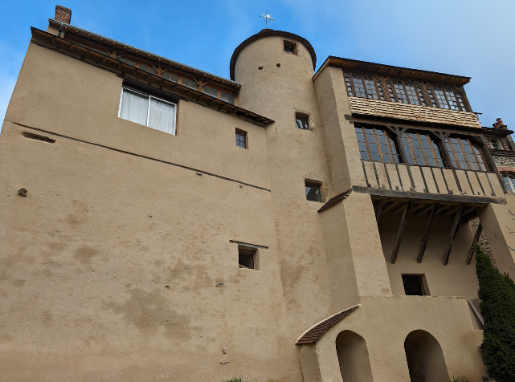
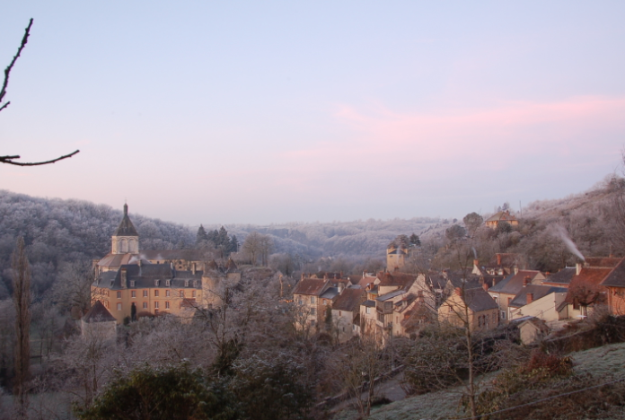
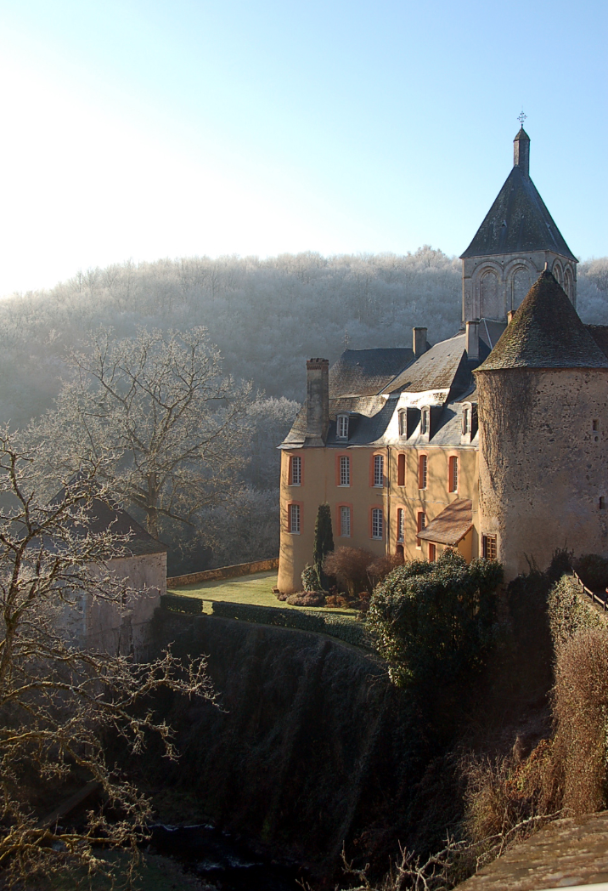
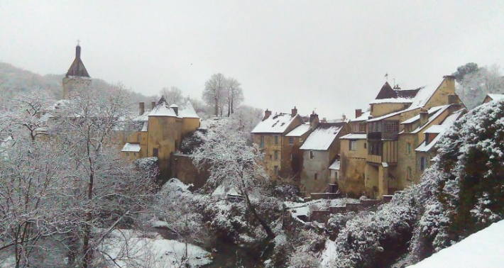

SERVICE DE PRESSE / KIT MEDIA
[PAGE 1 : COUVERTURE]
(Insérer ici la photo image_98739b.jpg — Le château baigné de lumière)
COLLOQUE DE GARGILESSE 2026 LES MUTATIONS DE LA CRÉATION À L'ÈRE DE L'IA
9 — 11 JUILLET 2026

SERVICE DE PRESSE / KIT MEDIA
[PAGE 1 : COUVERTURE]
(Insérer ici la photo image_98739b.jpg — Le château baigné de lumière)
9 — 11 JUILLET 2026

[PAGE 2 : L'INTENTION]
(Bloc de texte centré, entouré de beaucoup de blanc)
À l'écart des grands symposiums technologiques, l'association suisso-française Toiles de Données organise une rencontre d'un format inédit. Du 9 au 11 juillet 2026, un cercle restreint de chercheurs, philosophes et artistes se réunira à Gargilesse, l'un des plus Beaux Villages de France.
Dans la Vallée de la Creuse, ce laboratoire vivant engagera une réflexion de fond sur ce qui, demain, fera encore œuvre.

[PAGE 3]
La région fut le refuge de George Sand qui invita, en son temps, l’intelligentsia de son époque. En choisissant ce territoire pour confronter l'IA à la matérialité de paysages reculés, Toiles de Données pose une question :
L’algorithme n’est-il qu’un nouveau pinceau ou bien une entité capable d’approcher l’émotion née d’un rayon de soleil sur un toit le matin ?
[PAGE 4]
(Mise en page épurée, sous forme de liste graphique)
Théoriciens (cnrs / inria) : éthique numérique et sciences du langage.
Artistes pionniers : art algorithmique et robotique (le geste et la machine).
Conservateurs & juristes : droit d'auteur et souveraineté des données.
Philosophes & sociologues : phénoménologie du numérique.
Le format : des débats en petit comité, filmés en haute qualité pour une diffusion pérenne, privilégiant le fond sur la forme.

[PAGE 5 :]
Le village sous la neige
[PAGE 6]
CONTACT PRESSE : Laurent Trousselle Président de l'Association Toiles de Données +41 79 672 15 90 | contact@datacanvas.space
datacanvas.space